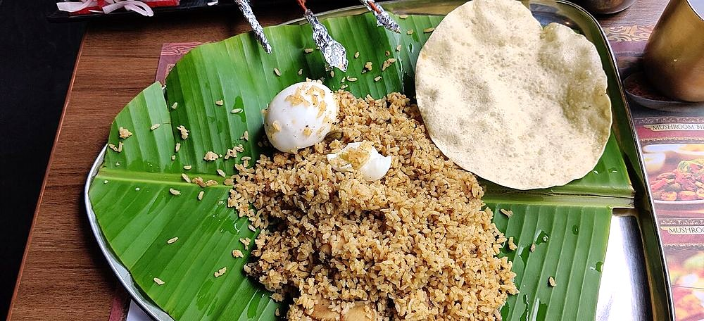

Dindigul Biryani
small-grain rice, curd and a heavy hand with pepper, the biryani that tastes sour

Contains: milk
Checked against the ingredient list for ten allergens: milk, egg, fish, crustaceans, tree nuts, peanuts, sesame, mustard, soy and gluten. Brands vary, so read the label on anything new to you.
Ingredients
Quantities for 4.
- 800g on the bone Chickenmutton works equally
- 400g Basmati Riceseeraga samba is traditional; the small grain is what holds the sourness
- 200g, sour Yogurtsourness is the signature here, so let the curd stand out
- 2 tsp, crushed Black PepperDindigul leans on pepper where other biryanis use chilli
- 3, sliced Onion
- 2, chopped Tomato
- 5, slit Green Chilli
- 2 tbsp paste Ginger
- 2 tbsp paste Garlic
- a large handful Mint
- 1 stick Cinnamon
- 4 Cloves
- 6 tbsp Neutral Oil
- 550ml Water
- to taste Salt
Cookware
stovetop, pressure cooker
Before you start
- Three things separate Dindigul from its neighbours: sour curd, crushed pepper and the small seeraga samba grain.
- Marinate in the refrigerator, not on the counter. An hour is plenty.
Method
- Marinate the chicken in the yogurt, ginger, garlic, pepper and salt for 1 hour in the refrigerator.
- Fry the cinnamon and cloves in the oil, add the onion and fry until golden.
- Add the green chillies, tomato and the marinated chicken. Cook until the oil separates, 12 minutes.
- Add the water and mint, bring to a boil and check the seasoning. It should taste slightly over-salted.The rice will absorb it. Season the liquid, not the finished dish.
- Stir in the washed rice, cover tightly and cook 15 minutes on the lowest heat.
- Rest 10 minutes before opening and forking through.
Storage
Keeps 2 days refrigerated. Cool quickly and refrigerate within two hours. Reheat under a lid with a sprinkle of water.
Nutrition Medium estimate
High protein: 54 g a serving, 24% of the calories
| Per serving538 g | Per 100 g | |
|---|---|---|
| Calories | 884 kcal | 165 kcal |
| Protein | 54.1 g | 10 g |
| Carbohydrate | 98.4 g | 18 g |
| of which sugars | 8.1 g | 2 g |
| Fibre | 4.5 g | 1 g |
| Fat | 29.2 g | 5 g |
| of which saturated | 5.0 g | 1 g |
| of which unsaturated | 21.8 g | 4 g |
Ingredients given to taste count as zero, so the real figures run a little higher. Estimated from raw ingredients using USDA FoodData Central.
Written and checked against sources, not cooked in a test kitchen. Times, yields, allergens and nutrition are worked out rather than measured, so use your own judgement on doneness and on storing. More in About.